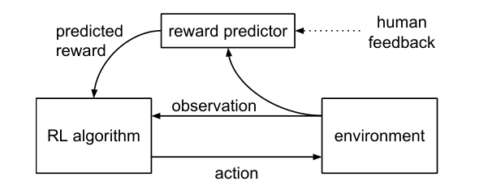
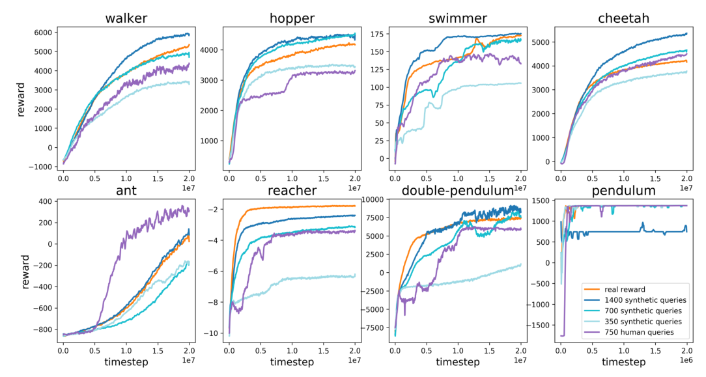
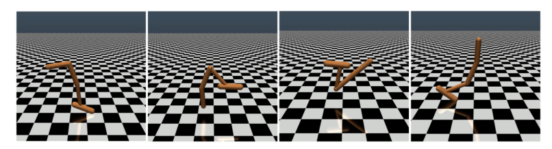

奖励写不出来，就让人在两段视频里挑一个更好的
Christiano 等人 2017 年（OpenAI 与 DeepMind 合作）写的《Deep Reinforcement Learning from Human Preferences》。强化学习要有一个「奖励函数」告诉智能体每一步做得好不好，可很多想要的事写不成公式。这篇论文的做法是：不写了。让人反复看两段 1–2 秒的短视频，只回答「哪段更好」；用这些比较训练一个「奖励预测器」，再让强化学习去最大化它给出的分数。在 Atari 游戏上，人的比较只占智能体交互量的不到 1%，机器人任务上用几百到一千多条比较就接近用真实奖励的强化学习；还学会了一个没人写得出奖励函数的新动作：后空翻（900 次比较，不到 1 小时，反馈来自作者）。这套「人类偏好 → 奖励模型 → 强化学习」的流水线，是后来 RLHF 的原型，在语言模型上的版本见 018 InstructGPT。
- 正文只走一条线：奖励写不出来、老办法都不够 → 只问人「哪段更好」→ 从比较里学出奖励 → 让强化学习去最大化它 → 为什么必须边练边问、怎么省人 → 每个结论对应哪个实验。只读每节的标题和每段第一句，也能串起来。
- 这是本系列第一篇强化学习论文。读懂主线需要的概念（奖励、策略、回报），正文里用一两句话带过；强化学习的基础、A2C 和 TRPO 的区别、公式、完整结果、当时的背景，都在页尾的附录里，默认折叠，标明对应原文第几节。
- 小数字例子都验算过：为讲解设定的标「示意」，按原文数字估算的标「推算」。
- 零件在前面篇讲过：softmax 和交叉熵在 001 NPLM，优化器在 005 Adam。本篇的网络都是很小的 CNN 和全连接网络，没有用 Transformer。之后 016 PPO 取代了这里的 RL 算法，018 InstructGPT 把同一条流水线搬到语言模型上。
1要解决的问题：奖励写不出来
强化学习（RL）有一个前提：每一步都有一个分数，告诉智能体这一步做得好不好，这个分数叫奖励。围棋有输赢，Atari 有游戏得分，所以 2017 年前后深度强化学习的成功，都发生在奖励现成的任务上（原文第 1 节）。可是很多想要的事写不成公式，比如「把桌子擦干净」「把鸡蛋炒好」。绕不开的办法有两条，各有一个毛病。
毛病一：随手写个近似的奖励，智能体会钻空子
奖励要写成传感器读数的函数。你只能写一个近似的，而智能体最大化的是你写下的这个公式，不是你心里想的那件事。原文第 1 节的说法是：这会让智能体「优化我们的奖励函数，却并不满足我们的偏好」。作者把它和当时越来越多的「价值错位」担忧联系在一起，所以这篇论文有明确的安全动机：如果能把「我们真正想要什么」传达给智能体，就是向解决错位迈了一步。
毛病二：绕开写奖励的老办法，各有各的短板
不写奖励，办法也有：让人做示范，或者让人当奖励函数。它们的问题在于：很多行为人能认出来，但做不出来。原文的例子是控制一个关节很多、形态完全不像人的机器人，人没法示范它怎么走。让人每一步打分又太贵：RL 要几百上千小时的经验，一个 Atari 智能体约训练 5000 万步，每一步都问人是不可想象的，原文说要把所需的反馈量降低「几个数量级」。让人给整段打绝对分也不行，因为尺度不统一。
原文把想要的方案写成四条：只能认出想要的行为也能教；非专家也能教；能规模化到大问题；省反馈。难就难在四条同时满足。
做法很小：让人只做最容易的那件事，比较两段，哪段更好。
2第一步：只问「哪段更好」
做什么。智能体在环境里行动，系统从它的轨迹里截出两个很短的片段，给人看。MuJoCo 机器人任务里片段长 1.5 秒（15 到 60 个时间步，随任务而定）；Atari 里是 25 个时间步，约 1.7 秒。人有四种回答：片段 1 更好，片段 2 更好，一样好，无法比较。
怎么存。数据库里存的是三元组（片段 1，片段 2，μ），μ 是「人偏向哪个」的分布：选了一个，μ 把全部分量放在那个上；选「一样好」，μ 是均匀的（0.5，0.5）；选「无法比较」，这条不入库。把平局存成均匀分布，是为了让它也能进后面的交叉熵损失：它告诉模型「这两段的分应该差不多」，信息不丢。
为什么这样就行。人不需要会做任务，也不需要给分，只需要看出两段里哪段更接近想要的。非专家也能答：反馈由承包商提供，事先只拿到每个任务的一两句话描述。片段为什么选 1–2 秒，原文 3.3 节的解释是工程经验：片段太短，人要花一阵子才看懂状况；更长的片段，评价时间大致和长度成正比；作者选了「评价时间仍然成正比的最短长度」。这一步对着的是上面的毛病二：人只做认得出、答得一致的判断，一条只要几秒，700 条比较约 35–58 分钟（推算：700 × 3–5 秒）。精确写法见附录 A。
3第二步：从比较里学出奖励预测器
做什么。训练一个小神经网络 r̂，输入一步的观察和动作，输出一个分数。一个片段的总分，是它每一步的分数加起来。两个片段的总分之差，决定「人选片段 1」的概率：分差越大，越可能选分高的那个。原文 2.2.3 节把它比作国际象棋的 Elo 分：两个棋手的 Elo 分之差，估计其中一人赢棋的概率；这里是两个片段的预测奖励之差，估计人选哪个的概率。数学上这是 1952 年的 Bradley-Terry 模型，就是只有两个选项的 softmax。
为什么这样就行。因为只有分差有意义：分数整体加 100，分差不变，概率不变。所以不需要任何一条绝对分数，整个 r̂ 都是从「选了哪个」里训练出来的。训练时，每条数据的损失是 −log（模型给人实际选的那个的概率），也就是交叉熵：预测对了损失小，预测错了损失大，梯度推着 r̂ 把人选的那个片段的分往上调。
r̂ 学到的只是「相对大小对」，这对 RL 够用：RL 只需要一个让好行为分高的排序。作者在这个基本做法上加了三处工程修改，早期实验里发现有帮助：训练一个集成而不是单个预测器；留出约 1/e 的数据做验证并自动调正则；假设人有 10% 的概率乱点。细节在附录 A。这一步对着的是毛病一和毛病二：奖励不再是人写的公式，而是从人的比较里长出来的。精确写法见附录 A 式 1 和损失。
4第三步：让强化学习去最大化它，三件事同时转
做什么。有了 r̂，对 RL 算法来说问题回到了传统样子，只是「奖励从哪来」换了：环境不再给奖励，每一步的奖励由 r̂ 给出。Atari 用 A2C，机器人任务用 TRPO，参数沿用在真实奖励任务上调好的那套，唯一调过的是 TRPO 的熵奖励（鼓励继续探索的一项）。作者偏好策略梯度这一类算法，原文给的理由是奖励 r̂ 会变（非平稳），需要对奖励变化稳健的方法。这两种算法是什么，附录 B 里讲。
三件事同时转。整个系统有三个过程：策略在环境里行动并用 RL 更新，系统挑片段对给人比较，用人的比较更新 r̂。三者异步、同时地运行：轨迹从第一个流向第二个，人的比较从第二个流向第三个，r̂ 的新参数又流回第一个。没有「先标完、再训练」的阶段。Atari 里，在作者的硬件上，预测器典型地每 10 个 RL 时间步处理 1 个标签。

为什么这样就行。奖励预测器相当于把稀缺的人换成便宜的网络：人只标一小部分，网络把这些标注外推到海量的交互上，RL 在海量交互上尽情使用 r̂。原文第 4 节的说法是，学一个单独的奖励模型，使交互复杂度降低约 3 个数量级。RL 部分基本不用改，只是奖励的来源换了。这一步对着毛病二里的「人给不起」：几百上千小时的经验，由 r̂ 来评，人只评其中一小部分。原文还做了一件事，保证人的反馈是智能体唯一的指引：去掉环境里泄漏任务信息的信号（比如摔倒就终止回合、屏幕上的得分），细节在附录 F。
5为什么必须边练边问
问题。既然 r̂ 能从比较里学出来，为什么不一次标一大批，训练好，之后永远用它？原文 3.3 节给了一个很重要的答案。
机制。开头的策略很烂，它的轨迹都是乱动。人比较这些乱动的片段，r̂ 学到的只是区分「乱动里相对好的」。策略用 r̂ 一练，很快走到 r̂ 从没见过的状态。在那里 r̂ 的输出只是外推，没人对它负责；总有一些状态，r̂ 给了高分，按真实意图却是错的。原文的说法是：由于占用分布（策略会访问的状态的分布）在变，离线训练的预测器只捕获了真实奖励的一部分，最大化这个「部分奖励」会导致在真实奖励看来很怪异的行为。我补充的：策略本身是个优化器，专门会找这种漏洞，找到了就一直刷。
原文的例子。Pong 里，离线训练有时让智能体学会避免丢分，却不学得分，结果是一轮来回击球永远打不完，同一串事件无限重复（原文用的词是 extremely long volleys）。这里的「一轮击球」不是强化学习里的回合（episode）。这就是奖励钻空子：智能体优化的是代理（r̂），不是真正目标。原文的补救是在线的：持续标注，让人看到智能体新近的行为，及时纠正 r̂。原文的结论是：人类反馈需要和 RL 学习交织在一起，而不是静态提供。
这也是为什么标注的节奏有讲究：开头先标一批（MuJoCo 里 25% 的比较来自随机初始化的策略；Atari 开头 500 条，并在 RL 开始前先把预测器训练 200 个 epoch），之后标注速率随训练推进逐渐下降，Atari 里只保留最近 3,000 条标签循环训练，让新标签的权重不被旧标签稀释。具体公式见附录 F。这一步对着的是毛病一：钻空子在这里没有被消除，只是被在线标注逐步缓解。
6省人的办法：只问最有分歧的
问题。人的时间是最贵的资源。随机选片段对来问，很多问题模型已经会了，浪费标注。
做什么。训练的是一个集成：默认 3 个独立的预测器，每个在从数据库里有放回抽样的数据上训练，所以它们各学各的。选问题时，先从当前轨迹里抽出一大批候选片段对（数量是最终展示给人的 10 倍），让每个预测器都预测「哪段会被偏好」，挑出预测方差最高的那些给人。
为什么这样就行。集成里各预测器在不同的样本上训练，意见一致，通常说明数据已经把这个问题钉住；意见分歧，说明数据在这里不够。问这类问题，每次标注最能缩小预测器之间的差异，类似主动学习里的不确定性采样。这只是直觉，不是严格保证。原文 2.2.4 节自己承认：这是一个粗糙的近似，消融实验显示在某些任务上它反而损害性能；理想做法是按「查询的期望信息价值」来选，留给了未来工作。所以不要把「主动选择」当成这篇论文成功的原因。这一步对着的是难点「人的时间最贵」。自助采样和为什么每个预测器会留出约 1/e 的数据，见附录 E。
7证据：它做到了多少
怎么比：三种反馈来源
两个领域：8 个 MuJoCo 模拟机器人任务（其中一个简单的小车倒立摆，原文叫 pendulum，复杂度相当于前人工作）和 7 个 Atari 游戏（与 Mnih 等 2013 相同）。同时比三种反馈来源：真实人类（承包商，不了解环境和算法）；合成预言机（用任务的真实奖励直接判哪段更好，等价于完美、无噪声的人）；以及直接用真实奖励做 RL（上限基线）。原文 3.1 节说，目标不是超越 RL，而是几乎一样好，只依赖稀缺得多的反馈。
机器人任务：700 条比较接近真实奖励的 RL
原文 3.1.1 节：用 700 条标签，在这些任务上接近用真实奖励的 RL；学出来的奖励训练往往不太稳定、方差更大，但均值相当。到 1400 条标签，整体略好于直接给真实奖励，原文说「令人惊讶」，猜想原因是学出来的奖励塑形更好：奖励学习过程会给所有通常之后伴随高奖励的行为分配正奖励。这是作者的假说，原文没有验证。真实人类反馈通常略逊于合成反馈，效率介于合成的一半到同样之间。Ant 是例外：人类反馈显著优于合成反馈，因为人被要求偏好「直立站着」的轨迹，这个信号对奖励塑形很有用。

Atari：更难追平，但大多数游戏上有明显进步
原文 3.1.2 节：Atari 里比机器人更难匹配 RL，但大多数游戏上有显著学习，个别游戏持平甚至超过。人的比较有多少？摘要说不到交互量的 1%。我用原文数字推算：5,500 条比较 × 每条两个片段 × 每片段 25 步 = 275,000 个时间步，对总训练量 50M 时间步约 0.55%，与「不到 1%」一致（这里按时间步算，原文没有逐项核算）。
真实人类反馈在多数游戏上与同数量的合成标签相近或略差，常与少 40% 标签的合成反馈相当；作者列了可能原因（标注错误、不同承包商不一致、标注速率不均使标签集中在状态空间的狭窄部分），都没有验证。Enduro 里，A3C 靠随机探索很难学会超车，用合成标签也难；人类标注者则倾向于奖励任何朝超车前进的进度，相当于把稀疏的奖励塑形了，所以反而超过 A3C。塑形的机制见附录 C。
新行为：没有现成奖励函数的任务
这是全文真正的亮点：前面的任务都有现成奖励，可以说「何必这样做」；下面这些行为，很难手写出能激励它们的奖励函数。参数与前面的实验相同，反馈由作者本人提供（不是外部承包商）。
| 行为 | 比较次数 | 用时 / 交互 |
|---|---|---|
| Hopper 连续后空翻，落地站稳再翻 | 900 | 不到 1 小时 |
| Half-Cheetah 单腿站立前进 | 800 | 不到 1 小时 |
| Enduro 与别的车并排行驶 | 约 1,300 | 约 400 万帧交互；会在相当长一段回合里和别的车几乎并排，但会被背景变化搞糊涂 |

哪个零件重要：消融实验
每次去掉一个零件，看性能掉多少。MuJoCo 每个变体用 700 条合成标签、5 次平均；Atari 用 5,500 条合成标签、3 次平均（Figure 5、6 说明；附录 A.2 记了少数例外）。下图只转述原文的文字结论，曲线我没有逐条读，需要对照原图的地方都标明了。
证据收在一起。人只回答「哪段更好」，就能训练出能用的奖励：机器人任务几百到一千多条比较，Atari 上不到交互量 1% 的比较，接近甚至个别超过用真实奖励的 RL；还能教没人写得出奖励的新动作。离线标注效果很差，所以反馈必须和 RL 交织在一起；单帧比较和打分在连续控制里都不如片段比较。主动选择和集成的贡献，原文没有给出结论。
8局限和后来
- 作者承认的：主动选择只是粗糙近似，某些任务上有害；真实人类反馈比合成反馈差，可能因为标注错误、不一致、标签集中；Qbert 没学会，短片段难评价；结论里希望将来「从偏好学一个任务，不比从程序化奖励学更难」。
- 我补充的：评估大多在真实奖励已知的任务上，用真实奖励当评分标准；真正没有奖励的新行为只是定性展示，反馈来自作者，没有定量对照。真实人类反馈实验全部只跑了一次，随机波动无法评估。承包商也被告知了任务描述，在 Atari 里还要先自己玩 5 分钟，所以「非专家」也需要一点培训。1–2 秒的片段对要几十分钟才看出好坏的长时程目标够不够，原文没有讨论。
- 钻空子没有被消除，只是被在线标注缓解。
- 后来：原文已经给出完整的三段式流水线：从人的比较学一个奖励模型，再用 RL 优化它，并强调在线持续收集反馈。这和 018 InstructGPT 的三步法在结构上是同一件事；本篇用的 A2C、TRPO 后来被 016 PPO 取代；把「对齐」放到语言模型上讨论的是 017。「RLHF」这个词本身不在本文里，本文用的是 human preferences。
附录 · 想深入再看
下面每一块都默认折叠，标题里写明了对应的原文章节；正文用不到它们。其中标「我补充」的，是原文之外我加的说明，标「待核实」的是我没有核对清楚的。
A · 公式和符号表（原文 2.1–2.2.3 节）
式 1：把片段总分之差变成「人选哪个」的概率（Bradley-Terry）
| 符号 | 是什么 |
|---|---|
| σ1 ≻ σ2 | 人更喜欢片段 1 |
| r̂(o, a) | 奖励预测器：对每一步给一个分数 |
| Σt r̂(…) | 片段里每一步的分数加起来，当作这个片段的总分。隐含假设：片段的好坏就是每一步好坏之和，且没有折扣（原文脚注 3） |
| exp(总分) | 把任意实数变成正数；分母是两个片段的 exp(总分) 之和，让两个概率加起来为 1 |
分子分母同除以第一项，得到 1 / (1 + e−(R1−R2))，即对分差做 sigmoid：只有分差有意义，绝对大小没有。原文说这是 Luce-Shepard 选择规则在轨迹片段上的特例。Atari 里奖励是前 4 个观察的函数而不是单帧（原文脚注 1），因为单帧看不出球往哪边飞。
损失：交叉熵
对数据库里每条三元组求和；μ 是人的标签（选 1 是 (1,0)，平局是 (0.5,0.5)）；括号里是交叉熵，前面的负号把「最大化对数似然」变成「最小化损失」。平局的数字例子（我补充的，示意）：若 P̂ = 0.881（分差 2），人标平局，loss = 0.5 × 0.127 + 0.5 × 2.127 = 1.127，比预测 0.5 时的 ln 2 = 0.693 更大，所以梯度会把两个片段的分数往一起拉。
三处工程修改（原文 2.2.3 节，「早期实验发现有帮助」）
- 集成：每个预测器在 |D| 条数据的有放回抽样上训练；最终 r̂ 是对每个预测器独立归一化后取平均。
- 留 1/e 数据做验证并自适应正则：每个预测器留出 1/e 的数据当验证集；用 ℓ2 正则，调节正则系数使验证损失保持在训练损失的 1.1 到 1.5 倍；有的领域也用 dropout。
- 假设人有 10% 概率乱点：不直接用式 1，而用 P′ = 0.9 · P̂ + 0.1 · 0.5。原文给的理由：人的出错概率是一个不会随分差变大而衰减到 0 的常数。
| 情形（示意） | 无此修改的损失 | 有此修改的损失 |
|---|---|---|
| 分差 2（P̂ = 0.881），人选了对的那个 | 0.127 | 0.171 |
| 分差 2，人选了「错的」那个 | 2.127 | 1.850 |
| 分差 10（P̂ ≈ 0.99995），人选了「错的」 | 10.0 | ≈ 2.99 |
没有这个修改时，模型对一个标签错得很自信，损失就会爆炸，一条标错的数据能把预测器带偏；有了它，P′ 永远落在 [0.05, 0.95] 内，每条数据的损失最多约 ln 20 = 3.0。这是一种标签噪声模型，是对「非专家会点错」的稳健化处理。
归一化（2.2.1 节）：预测器给出的奖励减均值、除标准差（MuJoCo 标准差 1，Atari 为 0.05）。原因是 Bradley-Terry 里只有分差有意义，奖励的零点和大小都是任意的，原文说「奖励的位置在学习问题里没有被确定」；统一量级后可以沿用针对真实奖励调好的超参数。
B · 强化学习基础：本文用到的概念（原文 2.1、2.2.1 节）
001–014 都是监督学习或自监督学习：每个输入都有标准答案。本篇换了一个世界：没有标准答案，只有「做完之后的评价」。智能体自己去试，试出来的结果好不好，由奖励信号告诉它。
| 名词 | 含义 | 在本文里 |
|---|---|---|
| 智能体 | 做决策的程序 | 玩 Atari 的网络；控制机器人的网络 |
| 环境 | 智能体之外的一切 | Atari 模拟器；MuJoCo 物理模拟器 |
| 观察 | 智能体此刻看到的东西 | Atari：一帧 84×84 画面（叠 4 帧）；机器人：关节角度和速度等数字 |
| 动作 | 智能体能做的选择 | 手柄按键；关节上施加的力矩 |
| 奖励 | 环境对这一步打的分 | 通常是游戏得分的变化、向前走的距离。本文的核心设定：环境不提供它 |
| 策略 π | 看到观察，输出动作（或各动作的概率） | 一个神经网络 |
| 片段 | 较短的一段轨迹 σ = ((o0,a0), …, (ok−1,ak−1)) | k 只有 15–60 步（1–2 秒） |
和监督学习有三点本质不同：没有标准答案；奖励有延迟，要弄清是前面哪一步的功劳（归因难题）；数据由智能体自己产生，策略一变，看到的画面分布就变，这一点在第 5 节极关键。
回报与折扣：目标是一整串奖励的总和 G = r0 + γ·r1 + γ²·r2 + …（0 < γ ≤ 1），越晚拿到的奖励打越多折扣。示意：γ = 0.9，奖励 [1, 0, 2]，G = 1 + 0 + 0.81 × 2 = 2.62；同样的奖励晚一步 [0, 1, 2]，G = 0 + 0.9 + 1.62 = 2.52，更低。原文 Eq. 1 本身没有折扣，但训练策略的 RL 算法有折扣：TRPO 用 γ = 0.995，A2C 用 γ = 0.99。
策略梯度：策略网络输出每个动作的概率。某个动作之后拿到好结果，就把它的概率调高一点；坏结果就调低。示意：某状态下 P(左) = P(右) = 0.5，选「右」之后回报 +10，更新后 P(右) 可能到 0.55；单次回报噪声大，只调一点，靠大量样本平均。优势：用「实际回报 − V(s)」代替回报，V(s) 是一个叫 critic 的网络估计的「从这个状态出发按现在策略走的期望回报」。例：V(s) = 4，实际回报 5，则优势 +1，说明这个动作比平均好。
A2C（A3C 的同步版本）：actor 是策略网络，critic 是价值网络，一起训练；很多并行的环境副本同时采集经验；除优势项外，还加一项熵奖励，鼓励继续探索。TRPO：策略梯度步子迈大了会崩，TRPO 限定新旧策略的差异（用 KL 散度衡量）不超过一个小范围，只在旧策略周围的信任区域里更新；本文用在 MuJoCo 机器人任务上。PPO 与本文同期，用更简单的办法达到类似效果，本文没有用，后来的 RLHF 基本都用它（见 016）。
探索与熵奖励：只会利用已知最好的动作，会一直卡在最早碰到的「还行」的做法上。策略的随机程度用熵衡量：P = [0.5, 0.5] 的熵是 0.693，P = [0.99, 0.01] 只有 0.056。熵奖励是在目标里加一项「熵越高越好」。为什么本文里探索更要紧：r̂ 在不断变化，一个动作今天被打低分，明天可能变高分；如果策略早把它的概率压到接近 0，就再也试不到。原文说 TRPO 靠信任区域保证探索，在奖励变化时反而会探索不足，所以唯一调过的超参数是给 TRPO 加了熵奖励（0.01；swimmer 用 0.001）；「信任区域为什么会减少探索」，原文只给了结论。
为什么偏好策略梯度：原文只说奖励可能非平稳，所以倾向于对奖励变化稳健的方法，并引用 Ho & Ermon 2016，没有给理由也没有对比。我的推测（原文没有验证）：基于价值的方法（如 DQN）先学「每个动作的预期回报表」，价值表是针对某个固定奖励学出来的，奖励一变就过期；策略梯度每次更新都用刚采集的新轨迹和当前 r̂ 重新算，对奖励变化更宽容。
C · 奖励塑形与稀疏奖励（原文 3.1 节；我补充）
先区分两个独立的问题：钻空子是「代理目标和真实意图不一致」；奖励塑形说的是：就算奖励完全正确，如果它太稀疏，智能体也学不动。
- 稀疏奖励：只有达成最终目标才给分，过程中全是 0。原文说 Enduro 对 A3C 很难，因为靠随机探索很难成功超过别的车；据此推断，真实奖励只有超车那一刻才有，智能体收不到任何信号，策略梯度没有方向可调。
- 塑形：在真实奖励之外加「中间进展」的奖励，告诉智能体门在哪个方向。示意（我的数字）：除了超过那一刻的 +1，再给「距前车越近越有小奖励」。
- 塑形的风险：中间奖励若和真实目标不一致，智能体可能只刷中间奖励，回到钻空子。
- 和本文的关系：人比较两段视频时，不会只在超车那一刻才觉得好，「逼近前车」的片段也会被选为更好。r̂ 拟合这些比较，就自动学到了一个带中间进展的奖励，等于自动塑形。原文 3.1.1 节对「1400 条略好于真实奖励」的解释，以及 Ant、Enduro 里人类反馈优于对照，说的都是这个机制；这个解释是作者的假说，原文没有验证。
D · Bradley-Terry 的算例，和 Elo 的类比（原文 2.2.3 节）
国际象棋里每个选手有一个 Elo 分，对局前系统根据分差预测谁赢的概率，每局结果再反过来调整双方的分。没有人给选手打绝对分，分数完全是从两两胜负里反推出来的。本文把每个片段当成一个选手，它的 Elo 分是片段内每一步 r̂ 的总和，人比较两个片段相当于一局对局。
算例（示意）：R1 = 3.0，R2 = 1.0，分差 2。e3 = 20.09，e1 = 2.72，P(1 胜) = 20.09 / 22.81 = 0.881，P(2 胜) = 0.119。分差 0、1、2、4 对应 0.5、0.731、0.881、0.982。把所有分都加 100，分差仍是 2，概率不变。人选了 1，模型给 0.881：损失 −ln 0.881 = 0.127；人选了 2，模型却给 0.119：损失 −ln 0.119 = 2.127，梯度推着 r̂ 把片段 2 的分往上调、片段 1 往下调。
E · 集成与自助采样（原文 2.2.3、2.2.4 节）
单个神经网络只给一个答案，不告诉你它有多确定。训练好几个独立的预测器，若它们对某对片段的判断一致，说明这个判断大概率已经学好；若各说各的，说明这里数据没覆盖，需要人来补。分歧是不确定性的粗略近似。
自助采样（bootstrap）：每个预测器训练时，从全部 |D| 条数据里有放回地抽 |D| 条，所以有的数据被抽到多次，有的一次也没抽到。每条数据在一次抽取里没被选中的概率是 1 − 1/|D|，抽 |D| 次都没被选中的概率 (1 − 1/|D|)|D|，|D| 大时趋近 1/e ≈ 0.368。所以每个预测器约有 36.8% 的数据没见过。原文说每个预测器留 1/e 的数据当验证集，数值对得上，但原文没有明说留出的就是自助采样没抽到的那部分，这是我的推测。
三个预测器的分歧算例见图 7：[0.80, 0.80, 0.80] 方差 0；[0.90, 0.10, 0.50] 方差 0.107；[0.95, 0.90, 0.92] 方差约 0.0004，很小。
F · 训练设置、超参数、标注节奏、成本（原文附录 A，3.1 节，第 4 节脚注 6）
| 项目 | MuJoCo 机器人 | Atari |
|---|---|---|
| RL 算法 | TRPO，γ = 0.995，λ = 0.97 | A2C，γ = 0.99，N = 16 个并行 worker，每次更新 n = 5 步，学习率 7×10−4 |
| 训练量 | 图 2 的横轴约 2×107 个时间步（pendulum 约 2×106） | 50M 个时间步（学习率计划按 80M 设，实际只训 50M） |
| 奖励预测器 | 2 层全连接，每层 64 单元，leaky ReLU（α = 0.01） | 输入 84×84×4（叠 4 帧）；4 层卷积（核 7×7、5×5、3×3、3×3，步长 3、2、1、1，各 16 个滤波器）→ 全连接 64 → 标量；卷积层用 batch norm 和 dropout 0.5 |
| 片段长度 | 1.5 秒（15–60 步，随任务） | 25 步（1.7 秒，15 fps） |
| 奖励归一化 | 标准差 1 | 标准差 0.05 |
| 熵奖励 | 0.01（swimmer 为 0.001） | β = 0.01 |
| 开头的比较 | 25% 来自随机初始化的策略 | 500 条，开始 RL 前预训练预测器 200 个 epoch |
| 标注速率（T 为帧数） | 2×106 / (T + 2×106) | 每 5×106 帧下调一次，大致正比于 5×106 / (T + 5×106) |
| 集成 | 3 个预测器；候选片段对的数量是展示给人的 10 倍（除非另有说明） | |
标注速率的数字例子（示意，按连续公式）：MuJoCo 里 T = 2×106 时速率降为初始的一半，T = 6×106 时降为 0.25；Atari 里 T = 5×106 时为一半。Atari 的预测器与 RL 异步训练，典型地每 10 个 RL 时间步处理 1 个标签，并只保留最近 3,000 个标签循环训练，理由是新标签可能代表分布偏移，标签总数很多时旧标签会稀释它们。
去除环境里泄漏的任务信息（2.1 节、附录 A）：很多环境失败时终止回合，这个「终止」本身就泄漏了「什么是坏」。作者去掉所有变长回合：MuJoCo 里把摔倒终止换成必须学出来的惩罚；Atari 里不向智能体发送丢命或结束信号，还把屏幕上的分数盖成黑色；MuJoCo 里去掉对力矩的惩罚，因为人从视频里看不到力矩。另外，不要求系统能重置到任意状态，所以两个片段起点不同，比较更难解释，但本文方法能克服。MuJoCo 的真实奖励其实是输入特征的二次多项式，用 2 层网络是「过强」的（脚注 7），作者故意用更灵活的结构，是为了立即适用于没有简单奖励的新任务。Atari 的标准环境包装（0–30 个空操作开头、帧最大池化、叠 4 帧、frameskip 4、奖励裁剪到 [−1, 1]）沿用 Mnih 等 2015；奖励裁剪使 Atari 里实际上只预测奖励的符号。
成本（第 4 节脚注 6）：Atari 实验用一台 16 CPU + 1 块 Nvidia K80 的虚拟机，约 $700/月，训练约一天，算力成本约 $25；5,000 条标签约 5 小时人工，按美国最低工资约 $36。这是原文说「计算成本已经和非专家反馈的成本相当」的依据。真实人类反馈的实验需要 30 分钟到 5 小时的人时（3.1 节）。
G · 实验的更多细节（原文 3.1–3.3 节）
- 曲线设置：MuJoCo 的曲线是 5 次平均，Atari 是 3 次平均，真实人类反馈都只有一次运行；MuJoCo 的 Reacher 和 Cheetah 因时间原因由作者本人标注，其余任务由承包商标注；Hopper 曲线不规则，原文说是因为一位承包商偏离了常规标注节奏。
- 反馈来源的原文措辞：「With 700 labels we are able to nearly match reinforcement learning on all of these tasks」没有区分这里的标签是人类还是合成；紧接着单独说人类反馈「通常略逊于合成」，所以不能直接读成「人类 700 条在所有任务上接近 RL」，具体看原文 Figure 2。
- Atari 的合成标签数：正文文字提到 350、700、1400 条合成比较的对比，后文又说 3,300 条；Figure 3 的图例写的是 10k、5.6k、3.3k 条合成标签和 5.5k 条人类标签。正文与图例的数字不一致，见附录 J。
- 消融的设置例外（附录 A.2）：图 6 里的 pretraining 变体用的是 5,000 条标签，target 的 BeamRider 曲线只平均了 2 次。
- 片段长度：原文总结是「更长的片段每条更有用，但每帧更不有用」，这是对学习效果的观察；评价时间随长度的关系是另一个现象，原文没有把前一个归因于后一个。Atari 里更长的片段还因为提供了上下文而更容易比较。单帧比较只在连续控制任务上测过，因为 Atari 的奖励模型依赖连续几帧（脚注 5）。
H · 当时的技术背景（2017）
- 深度 RL 的黄金期：DQN 用深度网络从像素学会 Atari（Mnih 等 2013、2015）；A3C（2016）用多个并行 worker 异步训练；TRPO（2015）解决策略梯度步长过大的问题；AlphaGo（2016）击败围棋高手。这些工作共同的前提是奖励函数现成。
- 工具：OpenAI Gym（Brockman 等 2016）提供统一接口；MuJoCo 是物理模拟器；ALE 是 Atari 模拟器。本文实现在 TensorFlow 上。
- AI 安全话题升温：《Concrete problems in AI safety》（2016）系统地提出了奖励设计不当导致的副作用和奖励黑客，作者里有 Christiano 和 Amodei，也是本文作者。本文的动机是把这类担忧落成一个可做的实验，带有很强的对齐色彩。
- 偏好式 RL 并非本文发明：原文 1.1 节列了一长串前人工作，本文方法遵循与 Akrour 等 2012、2014 相同的基本做法。区别在于他们的环境小、奖励假设为手工特征的线性函数；本文用深度网络做奖励模型，处理几十个自由度的物理任务和没有手工特征的 Atari。原文说「key contribution is to scale human feedback up to deep reinforcement learning」：贡献是规模化，不是概念首创。Akrour 等问的是整条轨迹，所以本文的比较数多约两个数量级，人工时间却多不到一个数量级。
- 和 004 同年：Transformer 刚出现（004），但本文所有网络都是小 CNN 和全连接网络；两条线要到 2019–2022 年才汇合。
- 组织背景：署名栏里，Christiano、Amodei 标 OpenAI，Leike、Martic、Legg 标 DeepMind，Brown 只写了邮箱；致谢里感谢了两家机构的支持。
I · 后来的发展，和前后篇衔接
事实（可从本系列其他篇或原文核实）：原文已给出完整的三段式流水线轮廓，与 InstructGPT 的三步法在结构上是同一件事；本文使用的 A2C、TRPO 后来被 PPO 取代，PPO 是之后 RLHF 的默认优化器。
我所知道的后续（本系列之外，细节待核实）：2019 年起同一批研究者把这个方法搬到语言模型上，用人类对文本续写或摘要的比较训练奖励模型，再用 PPO 微调语言模型（如 Ziegler 等 2019、Stiennon 等 2020）；2022 年的 InstructGPT 把它做成了面向指令遵循的标准流程。「RLHF」这个名字是后来的通行叫法，具体出处待核实。
后世评价（观点性的）：常被视为 RLHF 的起点，以及把「对齐」从理论讨论变成工程方法的早期例子。本文暴露的问题也被继承：奖励模型是代理，优化过头就会钻空子，后来的工作用 KL 惩罚、定期更新奖励模型、更多人类数据等方式缓解，具体见 018。
继承自：系列里没有直接前驱，这是第一篇强化学习论文；可算作基础的是 001 的交叉熵损失和 softmax，以及监督学习的训练套路；A2C 里用的优化器见 005。001–014 的目标函数一直是预测下一个词或遮住的词，也就是模仿人类写的文本；本篇开启了一条平行线：目标不是模仿，而是满足偏好。
| 015（2017，游戏和机器人） | 018（2022，语言模型）中的对应（概念对应，细节待核实） |
|---|---|
| 轨迹片段（1–2 秒的视频） | 模型对同一提示生成的若干条回答 |
| 人比较两个片段 | 人对多个回答排序 |
| 奖励预测器，Bradley-Terry + 交叉熵 | 奖励模型，思路相同，损失也是成对比较的形式 |
| 小 CNN 或全连接网络做策略，用 A2C / TRPO 优化 | 语言模型本身作为策略，用 PPO 优化（016） |
| 三个过程异步、在线地循环 | 更接近分批迭代（待核实） |
| 防钻空子靠在线持续标注 | 额外靠对原模型的惩罚等机制（待核实） |
一句话：015 回答「能不能这样训练」，018 回答「能不能把它用在语言模型上，让它听话」。留下的问题：优化器要更稳（016 PPO）；价值观目标怎么定义（017）；开放式文本里标注者要判断长文本的质量，且需要一个已经很强的预训练模型作起点（018）。
J · 疑点和没有核实的地方
- 人类反馈的条数：Figure 2 的图例写 750 human queries，正文 3.1.1 节说用 700 条标签；我没有找到原文对这个差别的说明。
- Atari 的合成标签数：正文说与 350、700、1400 条合成比较对比，又讨论 3,300 条；Figure 3 图例是 10k、5.6k、3.3k 合成标签和 5.5k 人类标签。可能是沿用了 MuJoCo 的措辞，以图例为准，待核实。
- Breakout 的分数：正文说得分能到 20，标签足够时到 50；Figure 3 里合成标签的曲线看起来高一些，具体数字没有逐条读，以原图为准。
- 人时下限：3.1 节说 30 分钟到 5 小时，我取这个说法；原文没有别处给出不同的下限。
- 1/e 与自助采样：留出的 1/e 是不是自助采样里没被抽到的那部分，是我的推测。
- 策略梯度的偏好：为什么偏好策略梯度而不是基于价值的方法，原文没有给理由，附录 B 里是我的推测。
- 主动选择和集成的贡献：原文没有给文字结论，需要对照 Figure 5、6，本页不下结论。
- 用的是概率还是硬投票：选方差最高的片段对时，原文没有说清，图 7 用概率只是示意。
- 论文的会议：本页依据 arXiv 2023 年的 v4 版，首页没有标会议名，是否发表于 NIPS 2017，待核实。